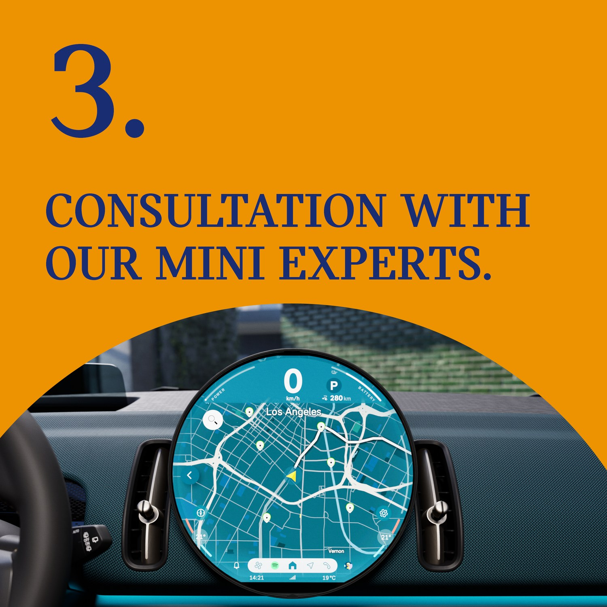
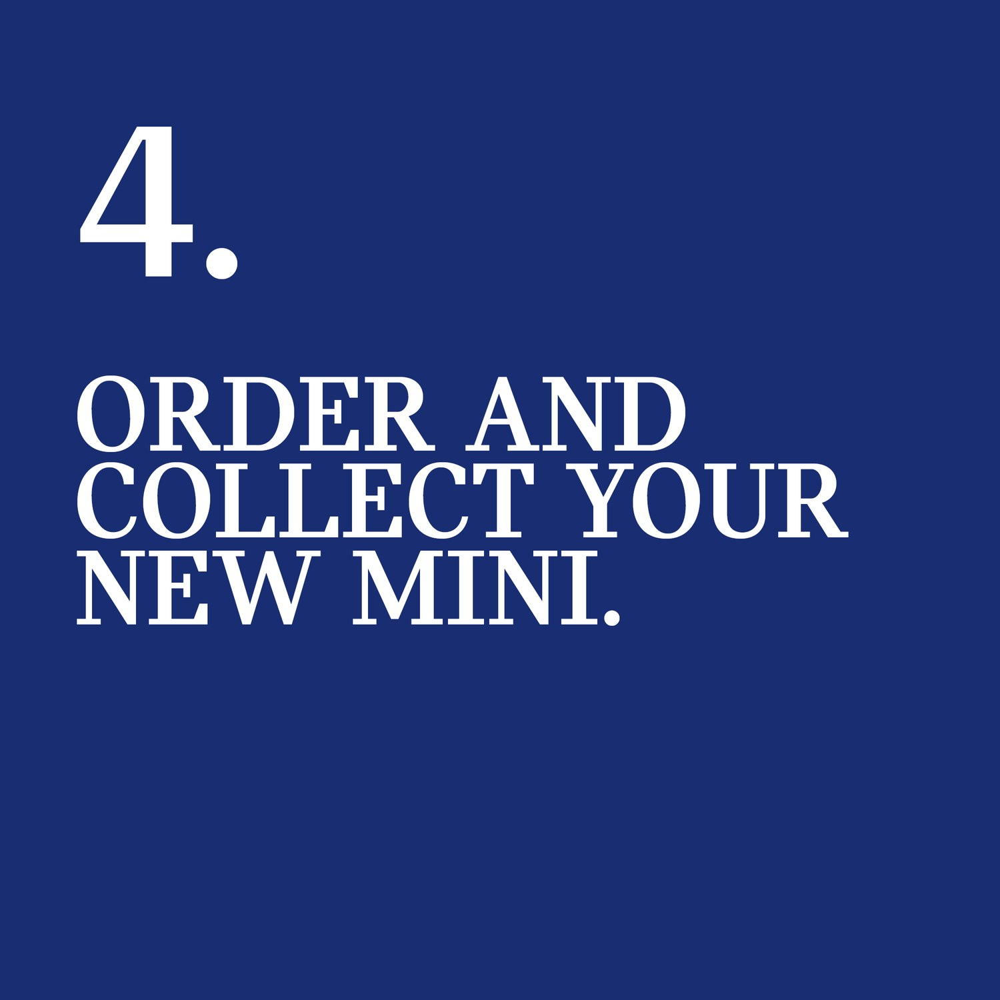
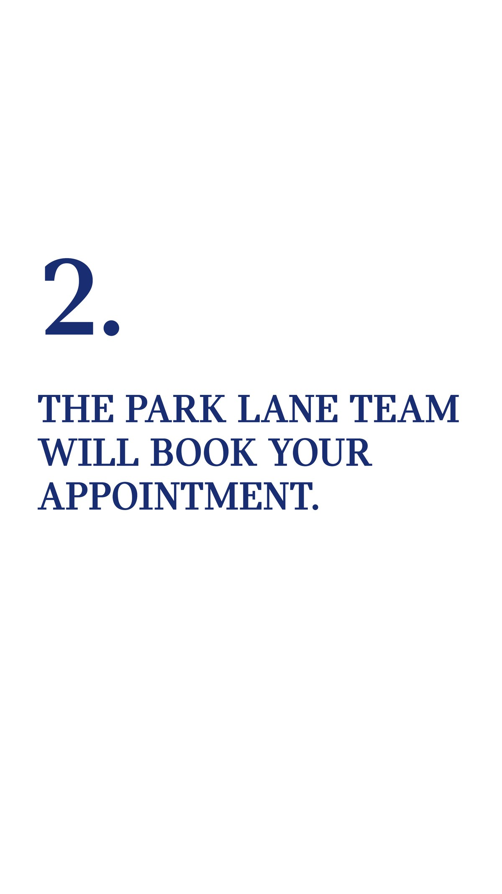
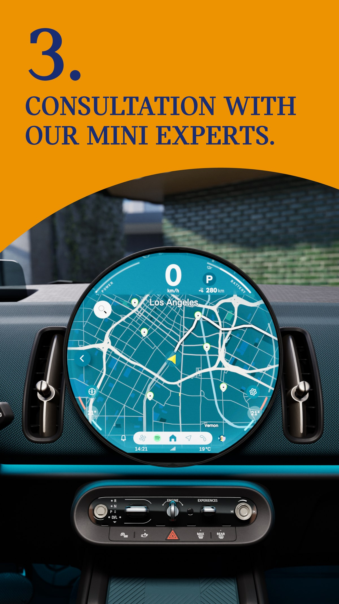
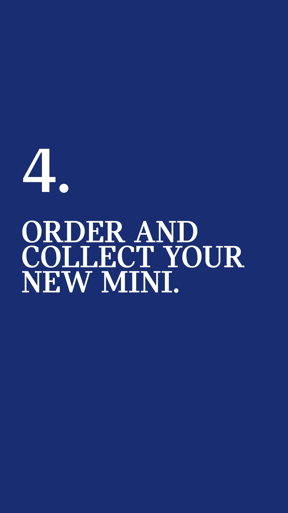
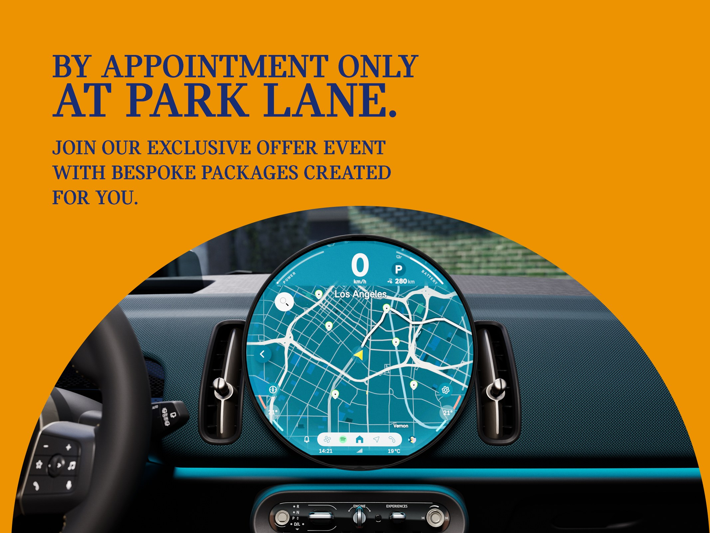

By Appointment Only
A limited-time offer event at MINI Park Lane, sold as something you book rather than something you are sold. A social-first film and a four-step mechanic, run across the feed, the inbox and the web.
The brief
An offer worth booking.
MINI Park Lane wanted registrations for a limited offer window, the kind of push that usually reads as a discount. The idea was to flip it: make the offer feel like an invitation. Frame it as an appointment with the team, set against a clear window, registration from 31 May to 7 June and appointments from 7 to 15 June, with one simple route to book.
The film
Made for the feed.
The lead is a vertical film built for stories and reels. It carries the line and the cars at pace, the electric Cooper and the Countryman through the city, then lands on the dates and the place. Shot and cut to work with the sound off, the way it will actually be seen.
The mechanic
Four steps to a new MINI.
The offer runs on a mechanic anyone can follow. Register through the link, the Park Lane team books the appointment, you sit down with the MINI experts, then order and collect. The MINI arc frames the photography and the count keeps the set moving, navy and amber traded back and forth so each post reads as one of a series.


The formats
Built for every placement.
The same campaign was cut for wherever it had to run. Full-height story frames for the feed, two website headers to lead the page, one in navy and one in amber, and an email signature so the team carried the offer into every reply.




The outcome
An offer that reads as an invitation.
From a vertical film in the feed to a header on the site and a line in an email, the offer ran as one clear idea: book an appointment, meet the team, drive away in a new MINI. A discount window, given the manners of an invitation.
Where does your brand sit against the business?
Every engagement starts with the Brand Alignment Diagnostic, a fixed first step that scores your brand against the business and shows what to fix first.